전자계산기제어산업기사(구) (2003-05-25 기출문제)
1과목: 프로그래밍일반
1. C 언어의 관계 연산자에 해당하지 않는 것은?
- <
- < >
- = =
- ! =
(정답률: 알수없음)

2. 부프로그램(subprogram)과 매크로(macro)에 관한 설명으로 거리가 먼 것은?
- 부프로그램을 사용하면 수행속도가 상대적으로 느리다.
- 매크로를 사용하면 일반적으로 프로그램의 크기가 커진다.
- 부프로그램을 사용하면 프로그램의 크기를 상대적으로 줄일 수 있다.
- 매크로를 사용하면 전체적인 프로그램을 모듈러 하게 구성할 수 있다.
(정답률: 알수없음)
3. 운영체제의 목적으로 거리가 먼 것은?
- 응답시간(turnaround time) 증가
- 신뢰성(reliability) 향상
- 처리능력(throughput) 향상
- 사용의 용이성(availability) 향상
(정답률: 알수없음)
4. 스트림 자료 활용의 예가 빈번한 언어는?
- COBOL
- SNOBOL 4
- C
- ADA
(정답률: 알수없음)
5. 정적 바인딩에 해당하지 않는 것은?
- 실행시간
- 번역시간
- 언어구현 시간
- 언어정의 시간
(정답률: 알수없음)
6. BNF 심볼에서 정의를 나타내는 기호는?
- ㅣ
- ::=
- ＜＞
- ==
(정답률: 알수없음)
7. 절대로더에서 기능과 그 행위 주체의 연결이 옳지 않은 것은?
- 할당- 프로그래머
- 연결- 로더
- 재배치-어셈블러
- 적재-로더
(정답률: 알수없음)
8. 시스템 프로그래밍 언어로서 가장 적당한 것은?
- C
- COBOL
- PASCAL
- FORTRAN
(정답률: 알수없음)
9. 구문 분석에는 하향식 파싱(Top-down parsing)과 상향식 파싱(Bottom-up parsing)이 있다. 하향식 파싱에 대한 설명으로 옳지 않은 것은?
- 하향식 구문분석은 입력 문자열에 대한 좌측 유도(left most derivation) 과정으로 볼 수 있다.
- 파싱할 수 있는 문법에 left recursion 이 없어야하고 left factoring 을 해야 하므로 상향식 파서보다는 일반적이지 못하다.
- 루트로부터 preorder 순으로 주어진 문자열에 대해 파스 트리를 구성한다.
- 터미날 노드에서 뿌리 노드를 만들어 내는 과정으로 뿌리 노드, 즉 시작 기호가 만들어지면 올바른 문장이고 그렇지 않으면 틀린 문장이다.
(정답률: 알수없음)
10. 기계어와 가장 유사한 언어는?
- Cobol
- Assembly
- C
- Basic
(정답률: 알수없음)
11. C 언어에서 데이터 형식을 규정하는 서술자로서 의미가 옳지 않은 것은?
- %d : 8진정수(Octal integer)
- %c : 문자(character)
- %s : 문자열(string)
- %x : 16진정수(hexadecimal)
(정답률: 알수없음)
12. 10진수 634를 BCD 코드로 표현한 것은?
- 011000110100
- 001100110100
- 011000110011
- 001100110011
(정답률: 알수없음)
13. 프로그램 언어의 실행 과정으로 옳은 것은?
- 로더-링커-컴파일러
- 컴파일러-로더-링커
- 링커-컴파일러-로더
- 컴파일러-링커-로더
(정답률: 알수없음)
14. 원시 프로그램을 하나의 긴 스트링으로 보고 원시 프로그램을 문자 단위로 스캐닝하여 문법적으로 의미있는 일련의 문자들로 분할해 내는 역할을 하는 것은?
- 구문분석기
- 어휘분석기
- 파스트리
- 코드생성기
(정답률: 알수없음)
15. 수학적 수식 "A+B"를 "+AB"로 표현한 표기법은?
- PREFIX
- INFIX
- SUFFIX
- POSTFIX
(정답률: 알수없음)
16. 객체의 외부적인 활동을 연산이라는 전제하에서 구현한 것은?
- 속성
- 메시지
- 메소드
- 추상화
(정답률: 알수없음)
17. 단항연산자(unary) 연산에 해당하는 것은?
- AND
- OR
- Complement
- XOR
(정답률: 알수없음)
18. C 언어에서 사용하는 기억클래스에 해당하지 않는 것은?
- auto
- static
- register
- scope
(정답률: 알수없음)
19. 구조적 프로그램의 기본 구조가 아닌 것은?
- 순차(sequence) 구조
- 조건(condition) 구조
- 일괄(batch) 구조
- 반복(repetition) 구조
(정답률: 알수없음)
20. 운영체제를 기능상 분류했을 때, 처리(processing) 프로그램에 해당하지 않는 것은?
- language translator program
- service program
- problem program
- supervisor program
(정답률: 알수없음)
2과목: 전자계산기구조
21. 명령어의 연산자(operation code)의 기능과 관계없는 것은?
- 입ㆍ출력 기능
- 제어 기능
- 논리연산 기능
- 주소지정 기능
(정답률: 알수없음)
22. 16비트로 2의 보수법을 사용하여 표현할 때 최대로 표현할 수 있는 정수(N)의 범위는?
- -216≤ N≤ 216-1
- -215≤ N≤ 215-1
- 0≤ N≤ 232
- 0≤ N≤ 232-1
(정답률: 알수없음)
23. 중앙처리장치(CPU)의 기능이 아닌 것은?
- 기억 기능
- 연산 기능
- 제어 기능
- 입력 기능
(정답률: 알수없음)
24. 다음 세 가지 연산자가 혼합되어 나오는 식에서 시행(연산) 순서가 옳은 것은?
- ①-③-②
- ②-③-①
- ②-①-③
- ①-②-③
(정답률: 알수없음)
25. JK 플립플롭에서 Jn=0, Kn=0 인 경우의 출력 Qn+1은?
- 0
- 1
- Qn
- 부정
(정답률: 알수없음)
26. 어떤 컴퓨터의 메모리 용량이 4K 워드이고, 워드 길이가 16비트일 때 AR(주소 레지스터)와 DR(데이터 레지스터)는 몇 비트로 구성하여야 하는가?
- AR:4, DR:16
- AR:12, DR:32
- AR:16, DR:65536
- AR:12, DR:16
(정답률: 알수없음)
27. 컴퓨터에서 음수를 표현하는 방법으로 옳지 않은 것은?
- 부호와 절대값 표시
- 부호화된 1의 보수 표시
- 부호화된 2의 보수 표시
- 부호화된 16의 보수 표시
(정답률: 알수없음)
28. 디스크판의 같은 위치에 있는 트랙의 집합을 무엇이라 하는가?
- 섹터
- 하드디스크
- 실린더
- 블록
(정답률: 알수없음)
29. 인터럽트가 컴퓨터에서 발생하였을 때 프로세서의 인터럽트 서비스가 특정의 장소로 점프하도록 되어 있는 것과 관계있는 것은?
- 인터럽트 마스크
- 인터럽트 핸들러(handler)
- 인터럽트 인에이블(enable)
- 벡터 인터럽트(vectored interrupt)
(정답률: 알수없음)
30. Excess-3 코드로 표현된 4비트 수 1000을 Gray 코드로 표현하면?
- 0101
- 0110
- 0111
- 1001
(정답률: 알수없음)
31. 명령어 사이클(Instruction Cycle)이 아닌 것은?
- Fetch Cycle
- Control Cycle
- Indirect Cycle
- Interrupt Cycle
(정답률: 알수없음)
32. micro 동작과 그 명칭 관계가 옳지 않은 것은?
- F : A←
 A의 보수
A의 보수 - F : A← A⊕B exclusive AND
- F : A←
 NAND
NAND - F : A←
 NOR
NOR
(정답률: 알수없음)
33. 전자계산기 명령(instruction)의 주소 지정방식 중 기억 장치에 최소 2번 접근(access)해야 오퍼랜드(operand)를 얻을 수 있는 것은?
- 직접 주소지정방식(direct addressing)
- 간접 주소지정방식(indirect addressing)
- 상대 주소지정방식(relative addressing)
- 이미디어트 주소지정방식(immediate addressing)
(정답률: 알수없음)
34. 1-주소 형식 인스트럭션에서 반드시 있어야 할 것은?
- 누산기
- 스택
- 승산기
- 인덱스 레지스터
(정답률: 알수없음)
35. 0(zero)-주소 명령어의 형식에서 결과 자료는 어디에 저장되는가?
- 스택
- 누산기
- 범용 레지스터
- 명령 레지스터
(정답률: 알수없음)
36. 다음 보기는 LOAD 명령을 Micro operation으로 표시한 것이다. A, B에 해당되는 것은?
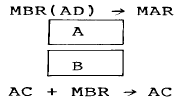
- A = M(MAR) → AC, B = AC → MAR
- A = M(MAR) → MBR, B = 0 → AC
- A = MAR → AC, B = AC → MBR
- A = MAR → MBR, B = MBR → AC
(정답률: 알수없음)
37. 16비트를 갖는 명령어중 OP code가 5비트, Operand가 8비트를 차지한다면 명령어의 종류는 몇가지인가?
- 5
- 8
- 32
- 256
(정답률: 알수없음)
38. 인터럽트의 발생 조건이 아닌 것은?
- 정전
- 오버플로우
- 잘못된 명령어 입력
- 전압 변화나 온도 변화
(정답률: 알수없음)
39. 2진수 1110.110을 10진수로 변환하면?
- 14.⑤
- 14.25
- 14.55
- 14.75
(정답률: 알수없음)
40. 실행(Execute) 메이저 상태에서 제일 처음 발생하는 마이크로 오퍼레이션은?
- MBR ← PC
- LD ← MBR
- MAR ← MBR
- FETCH
(정답률: 알수없음)
3과목: 마이크로전자계산기
41. 반도체 기억소자로서 리플레시(reflesh)를 필요로 하는 기억장치는?
- EPROM
- Dynamic RAM
- Static RAM
- FiFO
(정답률: 알수없음)
42. fetch 스테이트 동안에 컴퓨터가 하는 일은?
- 명령을 읽는다.
- 오퍼랜드를 읽는다.
- 인터럽트를 처리한다.
- 오퍼랜드의 주소를 읽는다.
(정답률: 알수없음)
43. DMA 방식의 데이터 전송시 DMA 제어기 내에 기억시켜야 할 내용을 담고 있는 부분이 아닌 것은?
- 스택
- 워드 카운터
- 주소 레지스터
- 제어 및 상태 레지스터
(정답률: 알수없음)
44. 컴퓨터의 입ㆍ출력 버스와 입ㆍ출력 장치를 연결하는 회로를 무엇이라 하는가?
- 캐시(cache)
- 모듈(module)
- 인터페이스(interface)
- 인스트럭션(instruction)
(정답률: 알수없음)
45. 기억장치의 전송 속도를 높이기 위한 방법이 아닌 것은?
- 캐시(cache) 기억장치를 사용한다.
- 사이클 타임이 빠른 것을 사용한다.
- 한번에 전송하는 데이터 워드 비트 수를 늘린다.
- 한번에 전송하는 데이터 워드 비트 수를 줄인다.
(정답률: 알수없음)
46. 컴퓨터의 내부 상태를 나타내는 레지스터(Register)는?
- Index Register
- Status Register
- Buffer Register
- Instruction Register
(정답률: 알수없음)
47. 입ㆍ출력 과정에서 채널 제어기가 임의의 시점에서 볼 때 마치 어느 한 입ㆍ출력 장치를 전용인 것처럼 운영하는 채널을 무엇이라 하는가?
- 가변 채널
- 셀렉터 채널
- 고정 채널
- 멀티플렉서 채널
(정답률: 알수없음)
48. 시스템 내의 ROM에 기억되며, 시스템을 초기화시키는 여러가지 루틴을 갖고 있는 프로그램은?
- 모니터 프로그램
- 에디터 프로그램
- 컴파일러 프로그램
- 인터프리터 프로그램
(정답률: 알수없음)
49. 프로그램을 위해 기억장소 할당 기능을 가진 시스템 소프트웨어는?
- 어셈블러
- 일괄처리 운영체제
- 로더(loader)
- 스케쥴러(scheduler)
(정답률: 알수없음)
50. 다음의 메모리 중 Access Time이 매우 고속으로 CPU의 속도에 근접하는 메모리는?
- CACHE Memory
- DRAM
- ROM
- UV-EPROM
(정답률: 알수없음)
51. 다음 메모리 장치에서 비휘발성이 아닌 것은?
- PROM
- EPROM
- Static RAM
- magnetic bubble memory
(정답률: 알수없음)
52. 어떠한 컴퓨터의 메모리 용량이 4096 워드(word)이다. MAR(memory address Register)는 몇 bit로 구성하면 좋은가?(단, 8 bit/word 이다.)
- 10
- 12
- 14
- 16
(정답률: 알수없음)
53. 다음은 마이크로컴퓨터에서 사용되는 입ㆍ출력 인터페이스이다. 병렬 입ㆍ출력용 인터페이스가 아닌 것은?
- PPI
- SIO
- Z-80 PIO
- PIA
(정답률: 알수없음)
54. 연산자의 기능이 아닌 것은?
- 전달 기능
- 함수연산 기능
- 제어 기능
- 주소지정 기능
(정답률: 알수없음)
55. 하나의 문자 처음과 끝에 각각 start와 stop 비트가 붙은 문자 단위로 전송하는 방식을 무엇이라 하는가?
- 직렬 전송
- 병렬 전송
- 비동기식 전송
- 동기식 전송
(정답률: 알수없음)
56. 다음 instruction 가운데 pseudo instruction이 아닌 것은?
- ORG
- END
- PUSH
- DEC
(정답률: 알수없음)
57. 알고리즘(algorithm)에 대하여 올바르게 설명한 것은?
- 플로우차트(flowchart)이다.
- 해석 프로그램의 총칭을 말한다.
- 컴파일러(compiler) 언어의 일종이다.
- 어떤 문제의 해를 구하기 위한 일련의 명령을 말한다.
(정답률: 알수없음)
58. 마이크로프로세서에 대한 설명으로 옳지 않은 것은?
- ALU의 기능을 갖는다.
- 입ㆍ출력장치를 포함한다.
- 각종 제어기기에 응용된다.
- 한개의 IC칩으로 된 CPU를 가리킨다.
(정답률: 알수없음)
59. 비트 슬라이스 마이크로프로세서(Bit slice Micro-Processor)를 가장 올바르게 설명한 것은?
- 마이크로프로세서, 기억장치, 입출력장치의 3가지 기본 장치로 구성된 작은 규모의 컴퓨터 시스템이다.
- 적은 비트 수를 가진 마이크로프로세서로 여러 개를 종속 접속하여 원하는 크기의 비트를 가진 프로세서로 확장시킬 수 있다.
- 기억장치와 입ㆍ출력장치가 마이크로프로세서와 함께 같은 칩(Chip) 속에 집적된 소자이다.
- 연산장치, 제어장치, 레지스터가 분리된 마이크로-프로세서를 말한다.
(정답률: 알수없음)
60. 컴퓨터가 직접 이해할 수 있는 언어는?
- BASIC
- machine language
- assembly language
- high-level language
(정답률: 알수없음)
4과목: 논리회로
61. 순서 회로의 설명 중 옳지 않은 것은?
- 조합회로가 포함된다.
- 기억소자가 필요하다.
- 카운터는 전형적인 순서회로이다.
- 입력값의 순서에는 영향을 받지않는다.
(정답률: 알수없음)
62. 아래에서
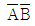
를 드모르간의 정리에 의해서 올바르게 변환시킨 회로는?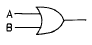
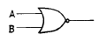
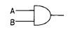
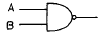
(정답률: 알수없음)
63. J-K 플립플롭에서 J에 "1", K에 "0"상태에서 클럭에 "0"인 펄스를 가하면 출력 측의 상태는?
- toggle(반전)
- 불변
- 1
- 0
(정답률: 알수없음)
64. BCD 코드(Code)란?
- 1Byte Code
- Bit
- 2진화 5진 Code
- 2진화 10진수
(정답률: 알수없음)
65. 불 함수 F=xy'+x'y+xy를 간략화 하면?
- x+y
- x
- y
- xy
(정답률: 알수없음)
66. 플립플롭(flip-flop)과 관계가 먼 것은?
- 카운터
- 레지스터
- 디코더
- RAM
(정답률: 알수없음)
67. 7진 계수기를 만들려면 T형 플립플롭이 몇 개 필요한가?
- 1
- 2
- 3
- 4
(정답률: 알수없음)
68. 1001111의 2의 보수를 구하면?
- 0110001
- 0001111
- 0111110
- 0110000
(정답률: 알수없음)
69. 데이터통신에서 에러의 검출 및 교정까지 가능한 코드는?
- Parity Code
- Excess-3 Code
- BCD Code
- Hamming Code
(정답률: 알수없음)
70. 다음 논리 회로는 무엇을 나타내는가?
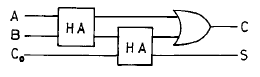
- 반가산기
- 반감산기
- 전가산기
- 전감산기
(정답률: 알수없음)
71. 그림과 같은 기능을 나타내는 게이트(gate)는?
- AND 게이트
- OR 게이트
- NAND 게이트
- NOR 게이트
(정답률: 알수없음)
72. 반가산기 회로의 출력으로 옳은 것은?(단, 입력은 A, B 출력은 Sum, Carry이다.)
- S=A+B, C=AB
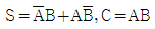
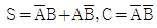
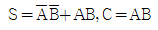
(정답률: 알수없음)
73. A=1, B=0, C=1, D=0 일 때, 논리값이 1이 되는 것은?
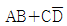
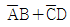
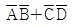
- AB+CD
(정답률: 알수없음)
74. JK 플립플롭의 특징은?
- inverter의 단점 보완
- D 플립플롭의 단점 보완
- T 플립플롭의 단점 보완
- RS 플립플롭의 단점 보완
(정답률: 알수없음)
75. 아날로그 정보를 디지털 정보로 변환하는데 가장 편리한 code는?
- excess code
- BCD code
- 51111 code
- GRAY code
(정답률: 알수없음)
76. 인코더(encoder)의 설명 중 옳지 않은 것은?
- 조합논리회로의 일종이다.
- BCD 코드를 생성하기도 한다.
- 키보드와 같은 입력장치에서 사용한다.
- n개의 입력 선과 2n개의 출력 선이 있다.
(정답률: 알수없음)
77. 반도체 기억소자 ROM에 대한 설명 중 옳지 않은 것은?
- 전원이 나가면 기록된 내용이 지워진다.
- 제조 과정에서 하드웨어적으로 프로그래밍 된다.
- 정보의 write는 불가능하고, 단지 read만 가능하다.
- 기억내용을 수시로 바꾸어야 하는 곳에는 사용할 수 없다.
(정답률: 알수없음)
78. 4 bit code가 아닌 것은?
- BCD code
- 2421 code
- 3초과 code
- 2-5진 code
(정답률: 알수없음)
79. 플립플롭(flip flop) 중에서 입력 상태가 그대로 출력되는 것은?
- RS 플립플롭
- D 플립플롭
- JK 플립플롭
- T 플립플롭
(정답률: 알수없음)
80. 조합 논리회로의 명칭은?
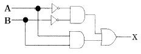
- 다수결회로
- 비교회로
- 일치회로
- 반일치회로
(정답률: 알수없음)
5과목: 정보통신개론
81. 통신 프로토콜(Protocol)의 설명 중 가장 합당한 것은?
- 회선이 접속되어 있는 단말장치를 중앙의 컴퓨터가 제어하기 위한 프로그램
- 데이터의 오류나 정정을 검출하기 위한 에러제어방식
- 컴퓨터간 또는 단말기간 에러없이 효율적인 정보를 주고 받기 위해 설정한 통신규칙
- 데이터의 동기방식을 결정하기 위한 데이터구성 모델
(정답률: 알수없음)
82. 통신과 방송이 결합한 위성 멀티미디어 환경에서 가장 각광받을 것으로 기대되는 미래의 이동통신 서비스는?
- IMT-2000
- MPEG-4
- LE0
- BLUE-TOOTH
(정답률: 알수없음)
83. 전화기의 구성부분 중 음성에너지를 전기적 에너지로 변환시켜주는 장치는?
- 수화기
- 다이얼
- 송화기
- 훅스윗치
(정답률: 알수없음)
84. 이동통신시스템에서 주로 이용하는 CDMA의 뜻은?
- 셀룰라 이동전화시스템이다.
- 핸드-폰을 이용하는 부가가치 네트워크이다.
- 코드분할 다중접속방식을 말한다.
- 디지털 영상정보통신방식을 말한다.
(정답률: 알수없음)
85. 기간통신사업자의 회선을 임차하여 부가가치를 부여한 음성이나 데이터정보를 제공하여 주는 서비스의 집합체는?
- LAN
- VAN
- ISDN
- PSDN
(정답률: 알수없음)
86. 다음 중 광섬유 케이블의 장점이 아닌 것은?
- 고속 대용량 전송이 가능하다.
- 가볍고 부식되지 않으므로 분기나 접속이 용이하다.
- 장거리 전송이 가능하다.
- 가볍고 내구성이 강하다.
(정답률: 알수없음)
87. 다음 ISDN 서비스 중 실제로 단말을 조작하고 통신하는 이용자측에서 본 서비스는?
- 텔리서비스
- 베어러서비스
- 부가서비스
- D채널 비접속서비스
(정답률: 알수없음)
88. 전산망 기기가 타인의 전산망 기기와 접속되는 경우에 그 설치와 보전에 관한 책임의 한계를 명확하게 구분하기 위한 것을 무엇이라 하는가?
- 구분점
- 한계점
- 분계점
- 경계점
(정답률: 알수없음)
89. 다음의 설명 내용에 해당되는 것은?
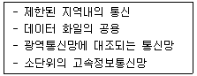
- VAN
- ISDN
- LAN
- PSTN
(정답률: 알수없음)
90. ITU-T의 표준시리즈 중에서 전화망을 통한 데이터 전송을 규정한 것은?
- A 시리즈
- O 시리즈
- V 시리즈
- X 시리즈
(정답률: 알수없음)
91. 데이터와 정보의 진화과정을 가장 적합하게 순차적으로 나타낸 것은?
- 데이터(Data)-정보(information)-지식(Knowledge)- 지능(intelligence)
- 정보(information)-데이터(Data)-지식(Knowledge)- 지능(intelligence)
- 데이터(Data)-정보(information)-지능(intelligence)- 지식(Knowledge)
- 데이터(Data)-지식(Knowledge)-정보(information)- 지능(intelligence)
(정답률: 알수없음)
92. 디지털 변조 방식 중에서 전송속도를 높이기 위하여 위상과 진폭을 함께 변화시켜서 변조하는 방식은?
- ASK
- PSK
- FSK
- QAM
(정답률: 알수없음)
93. 다음 식은 잡음이 있는 통신채널의 경우 통신용량을 계산하는 식이다. 기호가 바르게 표현된 것은?
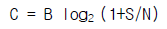
- C : 신호 전력
- B : 주파수 대역폭
- S : 잡음 전력
- N : 통신용량
(정답률: 알수없음)
94. 한 통신로를 이용하여 송신과 수신중 한가지 기능만으로 사용하되, 송· 수신 기능을 번갈아 사용하므로써 상호정보를 교환하는 방법은?
- 단방향(simplex)통신
- 반단방향(half simplex)통신
- 전이중방향(full duplex)통신
- 반이중방향(half duplex)통신
(정답률: 알수없음)
95. ISDN 채널 중 기본적인 이용자 채널로 PCM 화된 디지털음성이나 회선교환 혹은 패킷교환 등에 이용되는 채널은?
- A채널
- B채널
- C채널
- D채널
(정답률: 알수없음)
96. ISDN 사용자-망 인터페이스에 대한 설명 중 틀린 것은?
- ISDN 사용자-망 인터페이스에는 기본 인터페이스와 1차 군속도 인터페이스가 있다.
- TDM을 이용해서 사용자 정보채널과 신호 정보채널을 구성한다.
- 2선식 선로에 전이중 전송을 위해서 시간적으로 양방향 신호를 제어하는 ECH 방식을 사용한다.
- D채널을 통해 소량의 사용자 데이터를 전송하는 기능을 제공한다.
(정답률: 알수없음)
97. 뉴미디어인 CATV에 대한 설명으로서 옳지 않은 것은?
- 일반 지상파 TV 방송과 칼라색상 구조 및 주사방식이 서로 다르다.
- 다채널로서 방송뿐만 아니라 정보통신서비스가 가능하다.
- 원래 난시청 해소를 목적으로 설치했던 지역 공동안테나 TV 방식이다.
- 전송로는 동축케이블이나 광섬유케이블을 사용한다.
(정답률: 알수없음)
98. 뉴미디어 분류에 속하지 않는 것은?
- 방송계 뉴미디어
- 통신계 뉴미디어
- 전파 통신 뉴미디어
- 패키지계 뉴미디어
(정답률: 알수없음)
99. 데이터의 충돌을 막기 위해 송신 데이터가 없을 때에만 데이터를 송신하고, 다른 장비가 송신중일 때에는 송신을 중단하며 일정시간 간격을 두고 대기하였다가 다시 송신하는 방식을 무엇이라 하는가?
- 토큰 순회버스
- 토큰 순회 링
- CSMA/CD
- CSMA/CA
(정답률: 알수없음)
100. OSI 7계층 모델의 구조에 대한 설명으로 틀린 것은?
- 적절한 수의 계층을 두어 시스템의 복잡도를 최소화 하였다.
- 서비스 접점의 경계를 두어 되도록 적은 상호작용이 되도록 하였다.
- 동일계층에 서로 다른 프로토콜을 두어 효율성을 높였다.
- 인접한 상하위 계층간에는 인터페이스를 두었다.
(정답률: 알수없음)